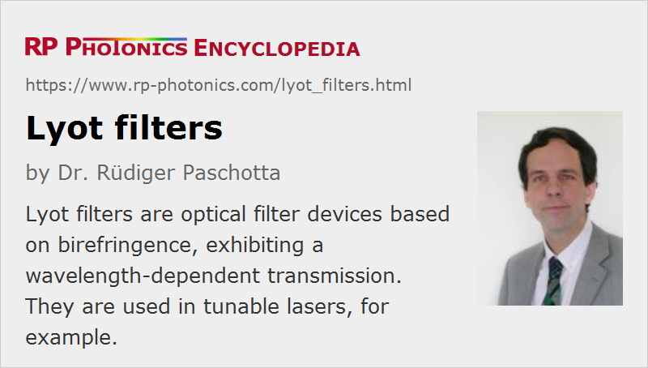

Lyot Filters
Definition: optical filter devices based on birefringence, exhibiting a wavelength-dependent transmission
More general terms: optical filters, wavelength tuning elements
German: Lyot-Filter
How to cite the article; suggest additional literature
Author: Dr. Rüdiger Paschotta
A Lyot filter is a kind of optical filter, i.e. an optical device with a wavelength-dependent power transmission. It consists of a sequence of birefringent crystalline plates (e.g. of quartz) and polarizers. In the simplest configuration, the birefringent axis of each crystal is oriented at 45° to the axis direction of the polarizers, and the beam is perpendicular to the plates. The light propagating in a crystal can be considered as containing two different linear polarization components, which experience a different phase delay. The relative phase delay for the two polarization components depends on the wavelength. Therefore, the loss of optical power at the subsequent polarizer is wavelength-dependent.
For a device with a single birefringent crystal, the power transmission versus optical frequency can be described with an approximately sinusoidal oscillation. (Chromatic dispersion causes some deviation from an exact sinusoidal oscillation.) By combining multiple crystals with different thickness, a sharper filter function can be realized. According to the Lyot design (invented by Bernard Lyot), the thickness of each crystal is half the thickness of the previous one (Figure 1). In this way, a small transmission bandwidth combined with a large period of the transmission peaks (i.e., a large free spectral range) is possible.
A Lyot-type filter with electrically tunable transmission peaks can be realized by using Pockels cells or electrically controlled liquid crystal modulators instead of the passive birefringent crystals. It is a kind of tunable optical filter.
For wavelength tuning of lasers, one mostly uses birefringent tuners based on a similar principle, but not containing polarizers, since the losses via the Fresnel reflection for s-polarized light are sufficiently strong.
Suppliers
The RP Photonics Buyer's Guide contains 4 suppliers for Lyot filters.
Questions and Comments from Users
Here you can submit questions and comments. As far as they get accepted by the author, they will appear above this paragraph together with the author’s answer. The author will decide on acceptance based on certain criteria. Essentially, the issue must be of sufficiently broad interest.
Please do not enter personal data here; we would otherwise delete it soon. (See also our privacy declaration.) If you wish to receive personal feedback or consultancy from the author, please contact him e.g. via e-mail.
By submitting the information, you give your consent to the potential publication of your inputs on our website according to our rules. (If you later retract your consent, we will delete those inputs.) As your inputs are first reviewed by the author, they may be published with some delay.
Bibliography
| [1] | B. Lyot, “Optical apparatus with wide field using interference of polarized light”, C. R. Acad. Sci. Paris 197, 1593 (1933) |
| [2] | O. Aharon and I. Abdulhalim, “Liquid crystal Lyot tunable filter with extended free spectral range”, Opt. Express 17 (14), 11426 (2009), doi:10.1364/OE.17.011426 |
| [3] | K. Ölgören and F. Ö. Ilday, “All-fiber all-normal dispersion laser with a fiber-based Lyot filter”, Opt. Lett. 35 (8), 1296 (2010), doi:10.1364/OL.35.001296 |
See also: birefringent tuners, optical filters
and other articles in the category photonic devices
|  |
If you like this page, please share the link with your friends and colleagues, e.g. via social media:
These sharing buttons are implemented in a privacy-friendly way!